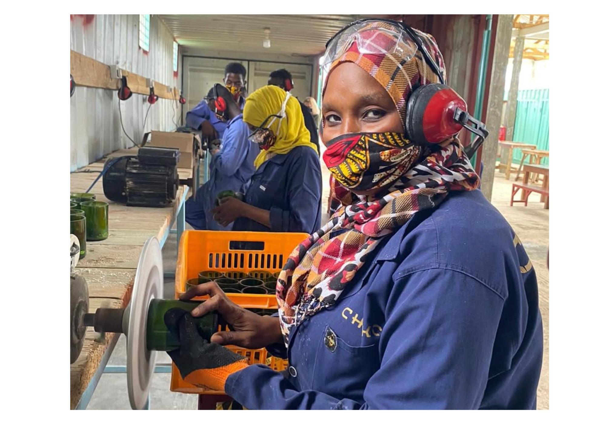

Social Entrepreneurship
in Zanzibar, Tanzania


All photographs courtesy of CHAKO Zanzibar.
How can discarded materials become an opportunity for local women?
During five months with CHAKO Zanzibar, I helped set up a workshop where local women could turn discarded materials into products to sell. It started with raising funds in the Netherlands to buy the first machines, but once I arrived in Zanzibar, the work became much more hands-on. I supported training, explored opportunities to sell the products in local shops and helped get the workshop running.
What stayed with me most was learning to work in a different cultural context. Things didn't always go as planned, and I had to learn to be patient, adapt my expectations and listen to the people I was working with. The workshop was still taking shape when I left, but it continued to grow and remains active today.